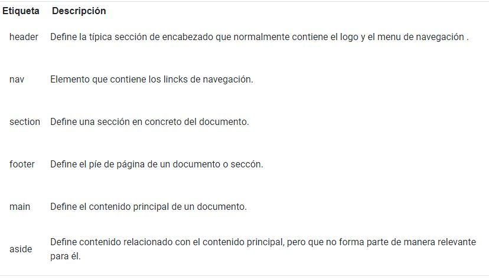
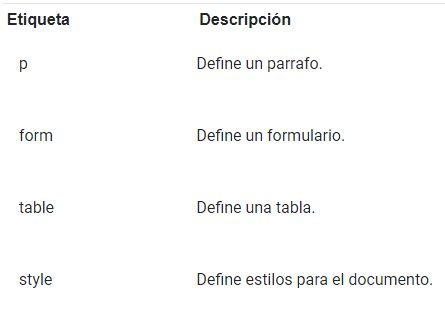

Qué son las etiquetas semánticas
Semántica: Perteneciente o relativo a la significación de las palabras, se encargan de dar un significado a las partes del documento.
En HTML5 se han incorporado muchas etiquetas que sirven para indicar qué son y cuál es el significado de los elementos que contienen dentro y que ganan mucha importancia en el marco del HTML y de la composición de un documento web por ayudar a motores de búsqueda como Google a indexar más correctamente los contenidos de un sitio.
Son importantes porque:
1. Permiten una mejor legibilidad del contenido de un documento HTML, tanto para el desarrollador, como para un indexador de contenido.
2. Al mejorar la legibilidad para los motores de búsqueda mejorará su posicionamiento.
3. Permite el desarrollo de contenido escalable.
4. Contenido ordenado y estructurado.
Ejemplos de etiquetas de semánticas
 Desarrolloweb6.com. Etiquetas semánticas del HTML5. Recuperado de: https://desarrolloweb.com/articulos/etiquetas-semanticas-html5.html.
Gomez-site.mx. Etiquetas semánticas HTML. Recuperado de: http://gomez-site.mx/blog/etiquetas-semanticas-html.